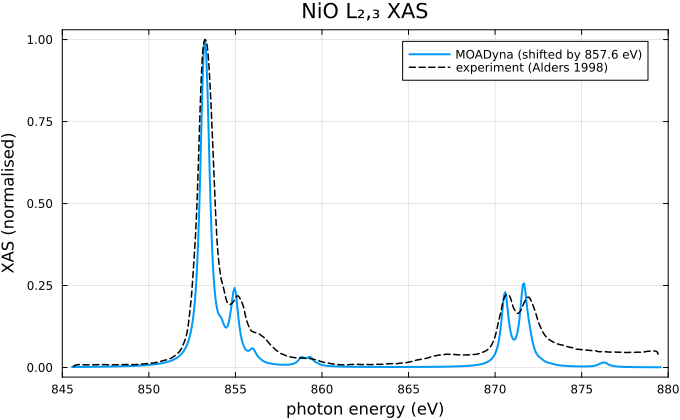
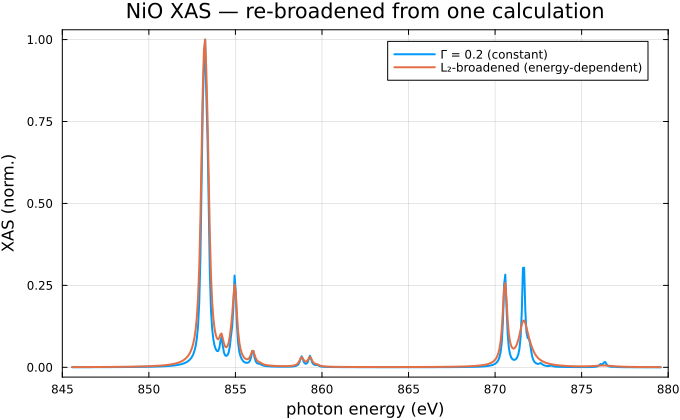
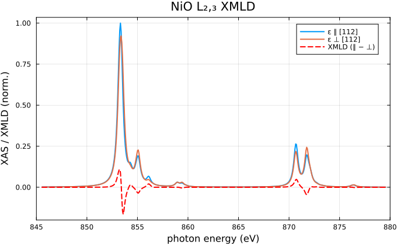
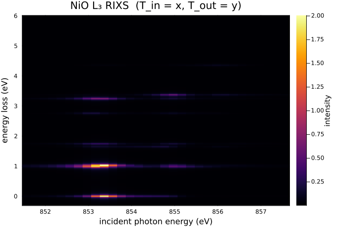
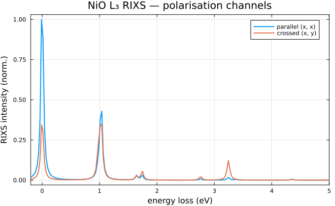
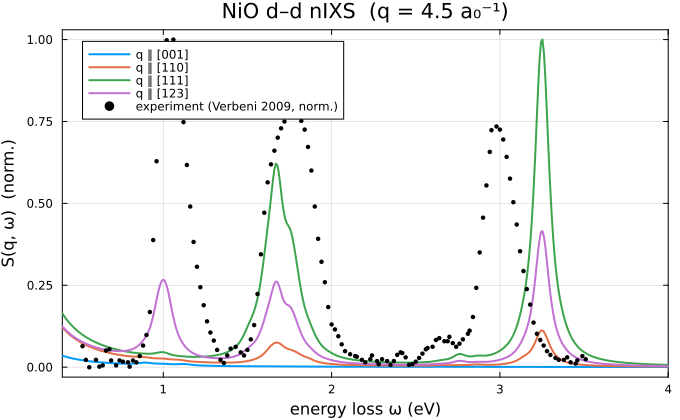
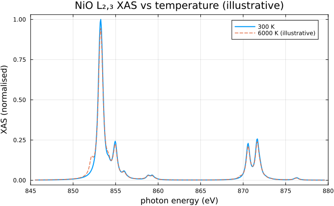
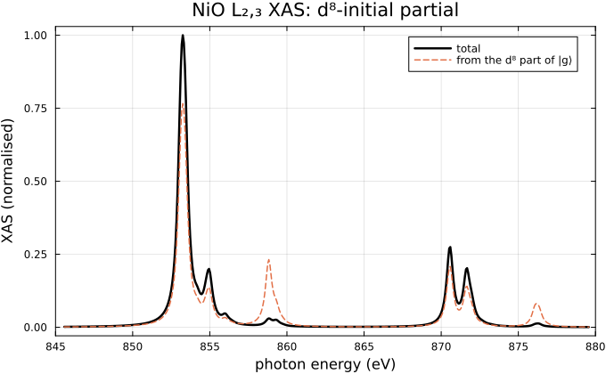

NiO: XAS, RIXS, and nIXS
This tutorial covers the NiO multiplet problem end to end — ground state, $L_{2,3}$ XAS, $L_3$ RIXS, and the non-resonant valence $d$–$d$ $S(q,\omega)$ — with selected comparisons to experiment (XAS and nIXS). It is written for experimentalists: every block is copy-paste runnable, every computed result is emitted by the executable example that produces it, and the parameters are the physical knobs to change.
The full production-resolution scripts live at examples/05_nio_xas.jl, examples/06_nio_rixs.jl, and examples/08_nio_nixs.jl; here the frequency grids are coarser so the page builds quickly.
Crystal field versus ligand field
Two models recur in multiplet spectroscopy:
- Crystal-field model. The open $3d$ shell sits in the electrostatic field of its neighbours — a one-body potential of the right point-group symmetry (here octahedral, $O_h$). The Hilbert space is just the $3d$ shell.
- Ligand-field (charge-transfer) model. The $3d$ shell additionally hybridises with a ligand bath — orbitals of $3d$ symmetry built from the surrounding O $2p$ states — so electrons can hop between metal and ligand, adding configurations such as $d^9\underline{L}$ (one electron transferred, leaving a ligand hole $\underline{L}$) to the nominal $d^8$ ground configuration.
The crystal-field model is the ligand-field model with the bath switched off ($V \to 0$). NiO is a charge-transfer insulator, so the whole tutorial — ground state, $L_{2,3}$ XAS, RIXS, and $S(q,\omega)$ — uses the ligand-field model.
The model
Three shells: the Ni $3d$ valence shell, the Ni $2p$ core shell (the $L$ edge promotes a $2p$ electron into $3d$), and a ligand $3d$-symmetry bath L_3d carrying the O $2p$ charge-transfer states. The Hamiltonian collects the standard multiplet terms from the Multiplets & Standard Operators chapter: $d$–$d$ Coulomb, $3d$ spin–orbit, an octahedral crystal field on Ni and the ligand, and Ni–ligand hybridisation. Charge transfer enters through the on-site energies, which onsite_energies solves from the $d^8$/$d^9\underline{L}$ configuration anchors (split by the charge-transfer energy $\Delta$).
using MOADyna
m = ShellModel([:Ni_2p, :Ni_3d, :L_3d])
# Standard NiO ligand-field parameters (eV); Slater integrals from
# Haverkort et al., Phys. Rev. B 85, 165113 (2012).
F2dd, F4dd = 11.142, 6.874 # d–d Slater integrals F², F⁴
F2pd, G1pd, G3pd = 6.67, 4.92, 2.80 # 2p–3d Slater integrals F², G¹, G³ (used for XAS)
zeta_3d, zeta_2p = 0.081, 11.51 # atomic spin–orbit ζ(3d), ζ(2p)
tenDq, tenDqL = 0.56, 1.44 # cubic crystal field on Ni / ligand
Veg, Vt2g = 2.06, 1.21 # Ni–ligand hybridisation (eg, t2g)
Udd, Upd, Delta = 7.3, 8.5, 4.7 # Hubbard U_dd, core U_pd, charge transfer Δ
Bz = 1.0e-6 # tiny field to fix the quantisation axis
# Charge-transfer on-site energies for the ground state (Ni 2p stays full).
es_gs = onsite_energies(m;
shells = (:Ni_3d, :L_3d),
U = (Ni_3d = Udd,),
anchors = [(Ni_3d = 8, L_3d = 10) => 0.0, # d⁸ reference
(Ni_3d = 9, L_3d = 9) => Delta]) # d⁹L̲ at +Δ
# Terms common to the ground and core-hole Hamiltonians. The only field is the tiny Bz
# that fixes the quantisation axis (it lifts the trivial triplet degeneracy).
H_common = coulomb(m, :Ni_3d; U = Udd, F = (F2dd, F4dd)) +
zeta_3d * LS(m, :Ni_3d) +
tenDq * Akm(m, :Ni_3d, :Oh, [0.6, -0.4]) +
tenDqL * Akm(m, :L_3d, :Oh, [0.6, -0.4]) +
Veg * hop(m, :Ni_3d, :L_3d, :Oh; irrep = :Eg) +
Vt2g * hop(m, :Ni_3d, :L_3d, :Oh; irrep = :T2g) +
Bz * (2 * Sz(m, :Ni_3d) + Lz(m, :Ni_3d))
H_GS = H_common + es_gs.Ni_3d * n(m, :Ni_3d) + es_gs.L_3d * n(m, :L_3d)Ground state
The physical sector keeps the Ni $2p$ shell full and shares 18 electrons between the Ni $3d$ and the ligand bath (the $d^8 + d^9\underline{L} + d^{10}\underline{L}^2$ charge-transfer manifold). Diagonalising:
basis_gs = basis(m,
nshells(m, :Ni_2p) == 6,
nshells(m, :Ni_3d) + nshells(m, :L_3d) == 18)
gs = eigen(H_GS, basis_gs; n = 6)
Eg = gs.values[1]
(sector_dim = length(basis_gs),
E_ground = round(Eg; digits = 4),
gap_to_3T2g = round(gs.values[4] - Eg; digits = 4))(sector_dim = 190, E_ground = -3.3948, gap_to_3T2g = 0.9599)The ground state is an orbital singlet, spin triplet ${}^3A_{2g}$: states 1–3 are its $M_S = -1, 0, +1$ partners, degenerate up to the $10^{-6}$ axis-fixing field, and the gap of $\approx 0.96$ eV is to the first ${}^3T_{2g}$ excitation.
Configuration mixing
The hallmark of a charge-transfer insulator is that the ground state is not pure $d^8$: hybridisation mixes in $d^9\underline{L}$ (and a little $d^{10}\underline{L}^2$). configuration_weights buckets the wavefunction by per-shell occupation:
ψ0 = gs.vectors[:, 1]
configuration_weights(ψ0, basis_gs, m; group_by = (:Ni_3d, :L_3d))3-element Vector{Pair{@NamedTuple{Ni_3d::Int64, L_3d::Int64}, Float64}}:
(Ni_3d = 8, L_3d = 10) => 0.8265552872835609
(Ni_3d = 9, L_3d = 9) => 0.1692081989262575
(Ni_3d = 10, L_3d = 8) => 0.004236513790181119The leading bucket (Ni_3d = 8, L_3d = 10) ($d^8$) carries $\approx 0.83$, with $\approx 0.17$ of $d^9\underline{L}$ — the quantitative covalency (equivalently $\langle N_{3d}\rangle > 8$, tabulated below).
Term symbol and energy levels
expectation_table prints the lowest eigenvalues with any operator expectation you ask for. The triplet signature is the total spin (Ni $3d$ plus ligand), built with the two-shell Ssqr — for ${}^3A_{2g}$, $\langle S^2\rangle = S(S+1) = 2$ ($S=1$):
println(expectation_table(gs, basis_gs,
["S^2(total)" => Ssqr(m, :Ni_3d, :L_3d),
"S^2(Ni 3d)" => Ssqr(m, :Ni_3d),
"N(3d)" => n(m, :Ni_3d)];
digits = 3))i E S^2(total) S^2(Ni 3d) N(3d)
1 -3.395 1.999 1.779 8.178
2 -3.395 1.999 1.779 8.178
3 -3.395 1.999 1.779 8.178
4 -2.435 1.979 1.83 8.124
5 -2.435 1.979 1.83 8.124
6 -2.416 1.999 1.846 8.123The ground-state row gives $\langle S^2\rangle_{\mathrm{total}} \approx 1.999$, confirming $S = 1$. Note this is the total spin: the Ni-$3d$-only $\langle S^2\rangle$ in the next column is smaller because the spin is shared with the ligand hole — a different, also-valid quantity. The $N(3d)$ column is the covalency seen in the configuration weights above: $\langle N_{3d}\rangle > 8$ because hybridisation admixes $d^9\underline{L}$.
L₂,₃ XAS
X-ray absorption adds a $2p$ core hole. We build the core-hole Hamiltonian (the $2p$–$3d$ Coulomb multiplet, the large $2p$ spin–orbit coupling that splits the edge into $L_3$ and $L_2$, and the core-hole on-site energies), embed the ground state into the larger basis, and call xas with the Cartesian Ni $2p \to 3d$ dipole operator:
es_xas = onsite_energies(m;
U = (Ni_3d = Udd,),
pairs = ((:Ni_2p, :Ni_3d) => Upd,),
anchors = [(Ni_2p = 6, Ni_3d = 8, L_3d = 10) => 0.0,
(Ni_2p = 6, Ni_3d = 9, L_3d = 9) => Delta,
(Ni_2p = 5, Ni_3d = 9, L_3d = 10) => 0.0])
H_XAS = H_common +
coulomb(m, :Ni_2p, :Ni_3d; U = Upd, F = (F2pd,), G = (G1pd, G3pd)) +
zeta_2p * LS(m, :Ni_2p) +
es_xas.Ni_2p * n(m, :Ni_2p) +
es_xas.Ni_3d * n(m, :Ni_3d) +
es_xas.L_3d * n(m, :L_3d)
T = dipole(m, :Ni_2p => :Ni_3d) # [T_x, T_y, T_z]
basis_xas = basis(m, nshells(m, :Ni_2p) in 5:6, total(m) == 24)
psi0 = embed(ψ0, basis_gs => basis_xas)
H_XAS_sp = assemble(compile(H_XAS, basis_xas), basis_xas)
omega_grid = range(-12, 22; length = 501) # energy relative to threshold (eV)
spec = xas(H_XAS_sp, basis_xas, T, psi0;
omega_grid = omega_grid, Gamma = 0.5, Eg = Eg, krylovdim = 200)
# isotropic (polarisation-averaged) intensity
Iiso = (-imag.(spec.tensor[1, 1, :]) .- imag.(spec.tensor[2, 2, :]) .- imag.(spec.tensor[3, 3, :])) ./ 3
omega = collect(omega_grid)
(L3_rel_eV = round(omega[argmax(Iiso)]; digits = 2),)(L3_rel_eV = -4.32,)The calculation gives energies relative to threshold — it does not predict the absolute $L_3$ edge energy. To compare with experiment we apply a single rigid shift that places the computed $L_3$ maximum at the experimental $L_3$ energy ($853.25$ eV, from Alders et al., Phys. Rev. B 57, 11623 (1998)). This shift is a fitted constant, not a predicted quantity — it is the standard way to place a relative multiplet calculation onto an absolute experimental energy axis:
using Plots, DelimitedFiles
gr()
default(size = (680, 420), framestyle = :box, legend = :topright)
E_exp_L3 = 853.25
Eshift = E_exp_L3 - omega[argmax(Iiso)] # the explicit, fitted alignment shift
photon = omega .+ Eshift
expxas = readdlm(joinpath(pkgdir(MOADyna), "docs", "src", "assets", "nio", "nio_xas_L23_exp.dat");
comments = true)
plt = plot(photon, Iiso ./ maximum(Iiso);
label = "MOADyna (shifted by $(round(Eshift; digits = 1)) eV)", lw = 2,
xlabel = "photon energy (eV)", ylabel = "XAS (normalised)",
title = "NiO L₂,₃ XAS", xlims = (845, 880))
plot!(plt, expxas[:, 1], expxas[:, 2] ./ maximum(expxas[:, 2]);
label = "experiment (Alders 1998)", lw = 1.5, ls = :dash, color = :black)
plt
The $L_3$ ($\approx 853$ eV) and $L_2$ ($\approx 870$ eV) white lines, split by the $2p$ spin–orbit coupling $\zeta_{2p} \approx 11.5$ eV, and their multiplet fine structure line up with the measured spectrum. To change the calculation: lower Gamma and widen omega_grid for sharper structure; change tenDq or Delta to see the crystal-field and covalency dependence.
Re-broadening without recomputation
The block-Lanczos solver stores the recursion coefficients inside spec, so the broadening can be changed without re-running the Lanczos recursion: re_broaden re-evaluates the same spectrum at a new constant Γ (optionally with an extra Gaussian for a Voigt instrument profile), and re_broaden_table applies an energy-dependent width — which is exactly what an L-edge needs, since the $L_2$ line is intrinsically broader than $L_3$ (Coster–Kronig decay):
iso(s) = (-imag.(s.tensor[1, 1, :]) .- imag.(s.tensor[2, 2, :]) .- imag.(s.tensor[3, 3, :])) ./ 3
spec_sharp = re_broaden(spec; Γ = 0.2) # constant, sharper — no recompute
spec_ck = re_broaden_table(spec; # broaden L₂ (ω ≳ 13 eV) more
lorentz_table = [-12.0 => 0.3, 13.0 => 0.3, 16.0 => 1.3, 22.0 => 1.3])
plt_b = plot(photon, iso(spec_sharp) ./ maximum(iso(spec_sharp));
lw = 2, label = "Γ = 0.2 (constant)", xlabel = "photon energy (eV)",
ylabel = "XAS (norm.)", title = "NiO XAS — re-broadened from one calculation",
xlims = (845, 880))
plot!(plt_b, photon, iso(spec_ck) ./ maximum(iso(spec_ck));
lw = 2, label = "L₂-broadened (energy-dependent)")
plt_b
Both curves come from the same spec — only the output broadening recipe changed.
Polarisation and magnetic linear dichroism
Passing the full Cartesian vector T = [T_x, T_y, T_z] (rather than one component) makes xas return the complete polarisation tensor $\chi_{ab}(\omega)$ — that is exactly what the block above did (spec.tensor has shape (3, 3, n_ω)). Any polarisation is then a one-line contraction with polarise: for a unit Jones vector $\boldsymbol\varepsilon$, $I(\omega) = -\operatorname{Im}\sum_{ab}\varepsilon_a^{*}\,\chi_{ab}(\omega)\,\varepsilon_b$. Linear polarisations use a real $\boldsymbol\varepsilon$; circular uses $\boldsymbol\varepsilon = (\hat x \pm i\hat y)/\sqrt2$; the isotropic spectrum is the average over any three orthogonal $\boldsymbol\varepsilon$ (equivalently $\tfrac13\operatorname{tr}$).
NiO is the textbook X-ray magnetic linear dichroism (XMLD) system: below $T_N$ it orders antiferromagnetically with the Ni moment along a $\langle 112\rangle$ easy axis, and the absorption then depends on the linear-polarisation direction relative to the moment. We orient the ${}^3A_{2g}$ moment with the exchange field (the same one used for nIXS below), recompute the tensor, and contract it for $\boldsymbol\varepsilon \parallel [112]$ and $\boldsymbol\varepsilon \perp [112]$:
Hex = 0.120 # AFM exchange field along [112] (eV)
H_GS_afm = H_GS + Hex * (Sx(m, :Ni_3d) + Sy(m, :Ni_3d) + 2 * Sz(m, :Ni_3d)) / sqrt(6)
afm = eigen(H_GS_afm, basis_gs; n = 1) # moment oriented along [112]
psi0_afm = embed(afm.vectors[:, 1], basis_gs => basis_xas)
spec_m = xas(H_XAS_sp, basis_xas, T, psi0_afm; # the full polarisation tensor χ_ab(ω)
omega_grid = omega_grid, Gamma = 0.5, Eg = afm.values[1], krylovdim = 200)
ε_par = [1, 1, 2] / sqrt(6) # ε ∥ [112]
ε_perp = [1, -1, 0] / sqrt(2) # ε ⊥ [112]
I_par = polarise(spec_m, ε_par)
I_perp = polarise(spec_m, ε_perp)
xmld = I_par .- I_perp # the linear-dichroism signal
(max_XMLD_percent = round(100 * maximum(abs, xmld) / maximum(I_par); digits = 1),)(max_XMLD_percent = 16.4,)plt_x = plot(photon, I_par ./ maximum(I_par);
lw = 2, label = "ε ∥ [112]", xlabel = "photon energy (eV)",
ylabel = "XAS / XMLD (norm.)", title = "NiO L₂,₃ XMLD", xlims = (845, 880))
plot!(plt_x, photon, I_perp ./ maximum(I_par); lw = 2, label = "ε ⊥ [112]")
plot!(plt_x, photon, xmld ./ maximum(I_par); lw = 2, ls = :dash, color = :red,
label = "XMLD (∥ − ⊥)")
plt_x
The two linear polarisations differ by $\approx$ the percentage printed above (a sizeable multiplet XMLD, concentrated in the $L_3$ fine structure and the $L_2$ peak ratio) — a magnetic observable obtained from the same tensor by two contractions, with no recalculation of the spectrum.
RIXS
Resonant inelastic X-ray scattering tunes the incident photon across the $L_3$ resonance, propagates through the core-hole intermediate state, and resolves the energy loss in the final state. rixs builds both resolvents by block Lanczos. We use a fine incident grid for a quasi-continuous map and a $50$ meV final-state broadening (Gamma_final = 0.05, representative of the experimental resolution), and put the incident axis on the same shifted photon-energy scale as the XAS:
H_int_sp = H_XAS_sp
H_final = H_common + es_gs.Ni_3d * n(m, :Ni_3d) + es_gs.L_3d * n(m, :L_3d)
H_final_sp = assemble(compile(H_final, basis_xas), basis_xas)
omega_in_grid = range(-6.0, 0.0; length = 31) # fine, across the L₃ resonance
omega_out_grid = range(-0.3, 6.0; length = 241) # energy loss
rixs_map = rixs(H_final_sp, H_int_sp, basis_xas, T[1], T[2], psi0;
omega_in_grid = omega_in_grid,
omega_out_grid = omega_out_grid,
Gamma_intermediate = 0.6, # core-hole lifetime
Gamma_final = 0.05, # 50 meV resolution
Eg = Eg, krylovdim = 200)
intensity = -imag.(rixs_map.tensor) # (n_in, n_out)
(peak_loss_eV = round(omega_out_grid[argmax(intensity)[2]]; digits = 2),)(peak_loss_eV = 1.04,)heatmap(collect(omega_in_grid) .+ Eshift, collect(omega_out_grid), permutedims(intensity);
xlabel = "incident photon energy (eV)", ylabel = "energy loss (eV)",
title = "NiO L₃ RIXS (T_in = x, T_out = y)", size = (680, 460),
colorbar_title = "intensity")
The energy-loss axis shows the $d$–$d$ excitations (the crystal-field/multiplet transitions, below $\approx 3$ eV) and, at higher loss, charge-transfer features; their intensity is resonantly enhanced as the incident energy is tuned through the $L_3$ white line.
Polarisation-resolved RIXS
RIXS carries two polarisations — incoming and outgoing — and their combination selects which final-state symmetries appear. Passing Cartesian vectors for both T_in and T_out makes rixs return the four-index Kramers–Heisenberg tensor $\chi_{ijkl}$; polarise(result, ε_in, ε_out) then contracts it for any incoming/outgoing pair, $\sigma = -\operatorname{Im}\sum_{ijkl}\varepsilon^{*}_{\mathrm{in},i}\,\varepsilon_{\mathrm{out},j}\,\chi_{ijkl}\,\varepsilon^{*}_{\mathrm{out},k}\,\varepsilon_{\mathrm{in},l}$. Fixing the incident energy at the $L_3$ resonance, we compare parallel ($x,x$) and crossed ($x,y$) linear channels:
omega_in_L3 = range(omega_in_grid[argmax(vec(sum(intensity; dims = 2)))], step = 1.0, length = 1)
rixs_pol = rixs(H_final_sp, H_int_sp, basis_xas, T, T, psi0; # vector T_in AND T_out
omega_in_grid = omega_in_L3,
omega_out_grid = omega_out_grid,
Gamma_intermediate = 0.6, Gamma_final = 0.05,
Eg = Eg, krylovdim = 200)
I_parallel = polarise(rixs_pol, [1, 0, 0], [1, 0, 0]) # ε_in ∥ ε_out (x, x)
I_crossed = polarise(rixs_pol, [1, 0, 0], [0, 1, 0]) # ε_in ⊥ ε_out (x, y)
(parallel_peak = round(omega_out_grid[argmax(I_parallel[1, :])]; digits = 2),
crossed_peak = round(omega_out_grid[argmax(I_crossed[1, :])]; digits = 2))(parallel_peak = -0.01, crossed_peak = 1.04)plt_r = plot(collect(omega_out_grid), I_parallel[1, :] ./ maximum(I_parallel);
lw = 2, label = "parallel (x, x)", xlabel = "energy loss (eV)",
ylabel = "RIXS intensity (norm.)",
title = "NiO L₃ RIXS — polarisation channels", xlims = (-0.2, 5.0))
plot!(plt_r, collect(omega_out_grid), I_crossed[1, :] ./ maximum(I_parallel);
lw = 2, label = "crossed (x, y)")
plt_r
The parallel channel keeps the quasi-elastic and low-loss weight, while the crossed channel suppresses it and exposes the $d$–$d$ multiplet at higher loss — the polarisation selection rules of the two-photon process, read directly off one tensor.
nIXS — non-resonant S(q, ω)
Non-resonant inelastic X-ray scattering measures the dynamic structure factor $S(\mathbf{q},\omega)$. At large momentum transfer it probes the valence $d$–$d$ excitations directly — a $3d \to 3d$ transition with no core hole — through the bare $e^{i\mathbf{q}\cdot\mathbf{r}}$ operator instead of a dipole. Expanding the plane wave in multipoles, $e^{i\mathbf{q}\cdot\mathbf{r}} = \sum_k i^k(2k+1)\,j_k(qr)\sum_m C^k_m(\hat q)^*\,C^k_m(\hat r)$, the $d$–$d$ channel $(\ell = 2 \to 2)$ admits ranks $k \in \{0, 2, 4\}$: besides the monopole ($k=0$, elastic), it reaches the quadrupole ($k=2$) and hexadecapole ($k=4$) channels that are dipole-forbidden. Because the angular part carries the direction $\hat q$ of the momentum transfer, $S(\mathbf{q},\omega)$ is anisotropic — the multipole content, and hence the visible $d$–$d$ spectrum, changes with the crystal orientation of $\mathbf{q}$. This directional fingerprint is the hallmark of $d$–$d$ nIXS, and is what dipole XAS (isotropic at a given polarisation) cannot give.
Since nIXS leaves the $2p$ core full, we reuse the ligand-field ground state. Below $T_N \approx 525$ K NiO is a type-II antiferromagnet with the Ni moment along a $\langle 112\rangle$ easy axis; the exchange (molecular) field along $[112]$ orients the ${}^3A_{2g}$ triplet, and we keep its three (nearly degenerate) partners — the spectrum is summed over them.
# nIXS valence d→d: the 2p core stays full. AFM exchange field along the [112] easy axis.
Hex = 0.120 # exchange field along [112] (eV)
H_nixs = H_GS + Hex * (Sx(m, :Ni_3d) + Sy(m, :Ni_3d) + 2 * Sz(m, :Ni_3d)) / sqrt(6)
Hn_sp = assemble(compile(H_nixs, basis_gs), basis_gs)
gn = eigen(Hn_sp, basis_gs; n = 3) # the three ³A₂g partnersThe Bessel moments $R_{j_k}(q) = \langle R|j_k(qr)|R\rangle = \int P^2\,j_k(qr)\,dr$ use the tabulated Ni $3d$ Hartree–Fock radial function. That data file is generated by MOADyna itself — radial_wavefunction runs an atomic Hartree–Fock (Cowan RCN) calculation for the $3d^8$ configuration and returns $P_{n\ell}(r) = r\,R_{n\ell}(r)$:
# How the committed asset was produced (needs a local Cowan RCN binary; see
# examples/gen_nio_radial.jl). The tutorial reads the committed file below so it
# builds without one.
rw = radial_wavefunction(:Ni, "3d8") # → rw.r, rw.P["3d"] = P_3d(r) = r·R_3d(r)The file stores $P(r) = r\,R(r)$, so the reduced radial weight applies:
# Ni 3d Hartree–Fock radial function (MOADyna-generated; column 7 "3d" is P(r)=r·R(r)).
M = readdlm(joinpath(pkgdir(MOADyna), "docs", "src", "assets", "nio", "Ni_3d_HF_radial.dat"),
'\t'; skipstart = 1)
rgrid = Float64.(M[:, 1])
P3d = Float64.(M[:, 7])
P3d ./= sqrt(radial_integral(P3d, P3d, rgrid, 0; kind = :power, weight = :reduced))
q = 4.5 # momentum transfer (1/a₀)
Rj = Dict(k => radial_integral(P3d, P3d, rgrid, k; kind = :bessel, q = q, weight = :reduced)
for k in (0, 2, 4))
(Rj0 = round(Rj[0]; digits = 3), Rj2 = round(Rj[2]; digits = 3), Rj4 = round(Rj[4]; digits = 3))(Rj0 = 0.07, Rj2 = 0.161, Rj4 = 0.086)The moments come out $R_{j_0}, R_{j_2}, R_{j_4} \approx 0.070, 0.161, 0.086$; the $k = 2$ (quadrupole) channel is the strongest at this $q$. We now build $S(\mathbf{q},\omega)$ for four crystallographic directions of $\mathbf{q}$, each summed over the three ground-state partners:
qdirs = ["[001]" => (0.0, 0.0),
"[110]" => (π/2, π/4),
"[111]" => (acos(sqrt(1/3)), π/4),
"[123]" => (acos(sqrt(9/14)), acos(sqrt(1/5)))]
omega_q = range(0.4, 4.0; length = 401) # d–d window (the k=0 elastic line sits at ω=0)
Sdir = map(qdirs) do dir
label = dir.first
θ, φ = dir.second
T_q = nixs(m, :Ni_3d => :Ni_3d; theta = θ, phi = φ, radial_integrals = Rj)
S = zeros(length(omega_q))
for i in 1:3 # sum over the three ³A₂g partners
S .+= dynamical_structure_factor(Hn_sp, basis_gs, T_q;
omega_grid = omega_q, Gamma = 0.1,
ψ₀ = gn.vectors[:, i], Eg = gn.values[i]).tensor
end
label => S
end
gmax = maximum(maximum(S) for (_, S) in Sdir)
# d–d peak positions of the low-symmetry [123] response (local maxima above 0.6 eV)
S123 = last(Sdir).second
peaks = [round(omega_q[j]; digits = 2) for j in 2:(length(omega_q) - 1)
if omega_q[j] > 0.6 && S123[j] > S123[j-1] && S123[j] > S123[j+1] && S123[j] > 0.05gmax]
(dd_peaks_123_eV = peaks,)(dd_peaks_123_eV = [1.0, 1.67, 3.25],)Along high-symmetry $[001]$ the $d$–$d$ weight nearly vanishes (the multipole selection rules are most restrictive there); as $\mathbf{q}$ rotates toward the low-symmetry $[123]$ direction more multipole weight contributes and the full $d$–$d$ structure appears — at the peak energies printed above. Overlaying the measured $d$–$d$ nIXS (Verbeni et al., J. Synchrotron Rad. 16, 469 (2009)):
plt_q = plot(; xlabel = "energy loss ω (eV)", ylabel = "S(q, ω) (norm.)",
title = "NiO d–d nIXS (q = 4.5 a₀⁻¹)", legend = :topleft, xlims = (0.4, 4.0))
for (label, S) in Sdir
plot!(plt_q, omega_q, S ./ gmax; lw = 2, label = "q ∥ $label")
end
expnixs = readdlm(joinpath(pkgdir(MOADyna), "docs", "src", "assets", "nio", "nio_nixs_dd_exp.dat");
comments = true)
scatter!(plt_q, expnixs[:, 1], expnixs[:, 2] ./ maximum(expnixs[:, 2]);
label = "experiment (Verbeni 2009, norm.)", ms = 2.5, mc = :black, msc = :black)
plt_q
The theory curves share one scale (so the silent $[001]$ response and the strong $[111]$ / $[123]$ ones are directly comparable); the experiment is normalised to its own maximum for a shape comparison. The computed $[123]$ $d$–$d$ peak energies printed above line up with the measured bands, while the relative peak weights vary strongly with the direction of $\mathbf{q}$ — the multipole information a dipole probe cannot access. (The measured intensities reflect the specific scattering geometry of the experiment, which is not a single one of these high-symmetry directions.)
Finite temperature
At finite temperature the absorption is a Boltzmann average over the thermally populated initial states (eigenstates of the no-core-hole Hamiltonian),
\[\sigma_T(\omega) = \frac{1}{Z}\sum_i e^{-(E_i - E_0)/k_B T}\,\sigma_i(\omega), \qquad Z = \sum_i e^{-(E_i - E_0)/k_B T},\]
with $\sigma_i$ the XAS from the $i$-th initial state (each referenced to its own energy via Eg = E_i). This Boltzmann average is built into xas: pass an Eigen of the initial multiplet together with a temperature keyword (k_B = 1, so in these eV units the temperature argument is k_B·T), and xas sums the per-state spectra with the weights above. An explicit omega_grid is required (each state's Eg shifts the auto-grid window), and the thermal result is grid-only (no re_broaden).
Our ground eigenvectors gs live in the smaller no-core-hole basis basis_gs, so we first embed them into the XAS propagation basis and assemble an Eigen there. (If your initial states already live in the propagation basis you can pass the Eigen directly.)
For NiO the ${}^3A_{2g}$ ground triplet is isolated from the ${}^3T_{2g}$ by the $\approx 0.96$ eV gap, so the spectrum is temperature-independent in any physical range. To make the machinery's effect visible we use a deliberately unrealistically large temperature, $k_B T$ comparable to that gap (here $T = 6000$ K, $k_B T \approx 0.52$ eV) — this is purely illustrative, not a physical NiO temperature:
Our Hamiltonian is in eV, so a Kelvin temperature converts with convert_energy(Tkelvin, :K => :eV) — MOADyna.Units provides this (k_B is exact, post-2019 SI), so we don't hard-code a Boltzmann constant.
using LinearAlgebra: Eigen
# Six lowest initial states embedded into the XAS basis → an Eigen there.
ψs_xas = reduce(hcat, [embed(gs.vectors[:, i], basis_gs => basis_xas) for i in 1:6])
eig_xas = Eigen(gs.values[1:6], ψs_xas)
xas_finite_T(Tkelvin) =
-imag.(xas(H_XAS_sp, basis_xas, T[1], eig_xas;
temperature = convert_energy(Tkelvin, :K => :eV), omega_grid = omega_grid,
Gamma = 0.5, krylovdim = 200).tensor)
σ_cold = xas_finite_T(300.0) # essentially the ground-state spectrum
σ_hot = xas_finite_T(6000.0) # unphysically hot — populates the ³T2g, illustrative only
kT6000 = convert_energy(6000.0, :K => :eV)
(weight_on_3T2g_at_6000K = round(sum(exp.(-(gs.values[4:6] .- gs.values[1]) ./ kT6000)) /
sum(exp.(-(gs.values[1:6] .- gs.values[1]) ./ kT6000)); digits = 3),)(weight_on_3T2g_at_6000K = 0.134,)plt_T = plot(photon, σ_cold ./ maximum(σ_cold); label = "300 K", lw = 2,
xlabel = "photon energy (eV)", ylabel = "XAS (normalised)",
title = "NiO L₂,₃ XAS vs temperature (illustrative)", xlims = (845, 880))
plot!(plt_T, photon, σ_hot ./ maximum(σ_cold); label = "6000 K (illustrative)", lw = 1.5, ls = :dash)
plt_T
At 300 K only the ground triplet is populated, so $\sigma_{300}$ is the ground-state spectrum; the unphysical 6000 K spreads weight onto the ${}^3T_{2g}$ and changes the multiplet structure. The point is the method, not a physical temperature dependence — for NiO the latter is negligible below very high temperatures.
Configuration-resolved partial spectrum
The absorption can be decomposed by the initial configuration. Projecting the ground state onto its $d^8$ component and computing the XAS from that piece — with the full final-state Hamiltonian — gives a partial spectrum on the same energy axis as the total (same final-state resolvent, same poles), so the peaks line up. (Projecting the final state instead would forbid final-state charge transfer and shift the peaks, which is a different quantity.) n(m, :Ni_3d) is diagonal in the Fock basis, so the projection is a simple mask:
using LinearAlgebra
N3d_diag = real.(diag(assemble(compile(n(m, :Ni_3d), basis_gs), basis_gs)))
ψ0_d8 = (round.(Int, N3d_diag) .== 8) .* ψ0 # d⁸ part of the ground state
spec_total = xas(H_XAS_sp, basis_xas, T[1], embed(ψ0, basis_gs => basis_xas);
omega_grid = omega_grid, Gamma = 0.5, Eg = Eg, krylovdim = 200)
spec_d8 = xas(H_XAS_sp, basis_xas, T[1], embed(ψ0_d8, basis_gs => basis_xas);
omega_grid = omega_grid, Gamma = 0.5, Eg = Eg, krylovdim = 200)
I_total = -imag.(spec_total.tensor)
I_d8 = -imag.(spec_d8.tensor)
(d8_weight = round(sum(abs2, ψ0_d8); digits = 3),
peak_ratio = round(maximum(I_d8) / maximum(I_total); digits = 3))(d8_weight = 0.827, peak_ratio = 0.766)plt_p = plot(photon, I_total ./ maximum(I_total); label = "total", lw = 2.5, color = :black,
xlabel = "photon energy (eV)", ylabel = "XAS (normalised)",
title = "NiO L₂,₃ XAS: d⁸-initial partial", xlims = (845, 880))
plot!(plt_p, photon, I_d8 ./ maximum(I_total); label = "from the d⁸ part of |g⟩", lw = 1.5, ls = :dash)
plt_p
The $d^8$-initiated partial peaks at the same energies as the total — it is genuinely a piece of the same spectrum. The complementary $d^9\underline{L}$ part supplies the rest; because the dipole operator can connect both initial pieces to common final states, the two partials interfere and do not add up to the total exactly.
Final-state channels via restrictions=
The complementary decomposition projects the final state into a fixed $3d$ count after every Lanczos matvec — the xas restrictions keyword, an in-recursion projection rather than a mask on the initial state. The $L$-edge promotes $d^8 \to d^9$ (plus $d^{10}\underline{L}$ charge transfer), so the meaningful final-state channel is $3d^9$:
spec_d9f = xas(H_XAS_sp, basis_xas, T[1], embed(ψ0, basis_gs => basis_xas);
omega_grid = omega_grid, Gamma = 0.5, Eg = Eg, krylovdim = 200,
restrictions = nshells(m, :Ni_3d) == 9)
I_d9f = -imag.(spec_d9f.tensor)
(d9_final_fraction = round(maximum(I_d9f) / maximum(I_total); digits = 2),)(d9_final_fraction = 0.62,)Because the $3d$ count is not conserved by the hybridisation, the $3d^9$ and $3d^{10}\underline{L}$ final-state channels do not sum to the total — the restriction cuts the inter-channel coupling (the documented caveat, and why a final-state-projected partial can shift relative to the total, unlike the initial-state piece above).
Where to go next
- The executable scripts
examples/05_nio_xas.jl,06_nio_rixs.jl, and08_nio_nixs.jlrun the same physics at production resolution. - The Multiplets & Standard Operators chapter documents every operator used here.
- The Spectroscopy chapter covers the response machinery in depth.